Songa Mobile App
Complete reference documentation for the Songa mobile application — covering driver flows, Kilikawi sessions, rentals, wallet, and the Battery Agent / Hub Manager app. Prepared by Antarctica Global Technology and Consulting, April 2026.
11 chapters · Two apps: Driver App (Part 1) & Battery Agent App (Part 2) · Use the search bar or navigate by section
Introduction
Document scope, the two mobile app variants, and the invite-only authentication flow for drivers and agents.
1.1 About This Document
This document covers the mobile flows executed by drivers, Kilikawi agents, hub managers, and battery agents on the Songa Mobility platform. It is a companion to the Web Application Feature Documentation and the Master Context Document.
This is a working reference — content reflects the platform as it currently stands. Additional flows will be added as documentation progresses.
1.2 Two Mobile App Variants
| App | Users | Navigation | Primary Functions |
|---|---|---|---|
| Driver App | Drivers, Kilikawi agents | Tab bar: Trips, Sessions, Rentals, Wallet | Aggregation trips, Kilikawi sessions, trike rentals. Login As selection sets the default homepage. |
| Battery Agent / Hub Manager App | Battery agents, hub managers | Three-tab: Hubs, Transfer Requests, Kilikawi | Battery charging, inter-hub battery transfers, hub asset visibility. |
1.3 Authentication
Access is invite-only. No driver or agent can self-register. The flow is identical for both app variants.
Aggregation Trip Flow
The primary field operation. Steps are strictly sequential — each unlocks only after the previous is complete. The full trip executes offline after an initial download over hub Wi-Fi.
2.1 Trip Listing
The Trips tab shows all assigned trips grouped by date. The Up Next card highlights the most imminent trip with a Start Trip button. Each trip row shows the Trip ID, scheduled time, recommended energy (kWh), and stop count. Tomorrow's trips are visible but not yet actionable.
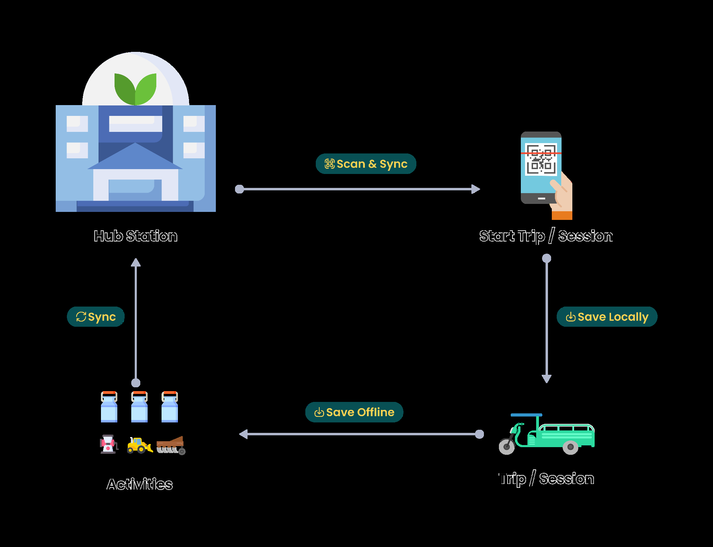
2.2 Trike Verification
On tapping Start Trip, the driver must verify the trike. Two methods are available — both lead to the same result. If the assigned trike is unavailable, any trike can be selected.
- Scan QR — Camera opens to scan the QR code on the trike. Trip ID and stop count are shown as context.
- Select Manually — Searchable text field: driver types the trike registration, selects from list, and saves.
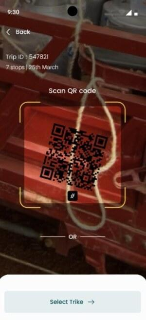
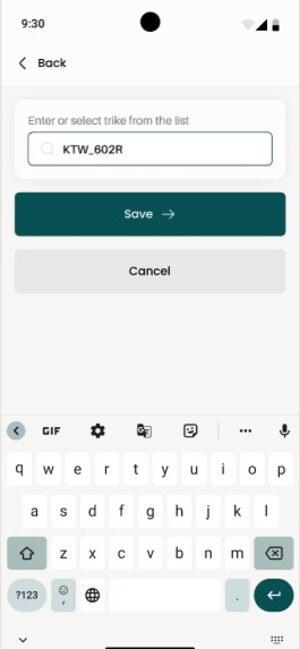
2.3 Safety Checklist
After trike verification, the driver completes the pre-trip safety checklist. Items are configured by the hub manager. Mandatory items (marked *) must all pass. The driver sees Known Issues from prior service records as context.
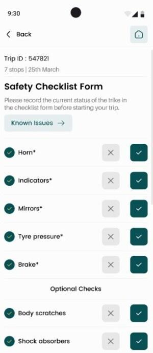
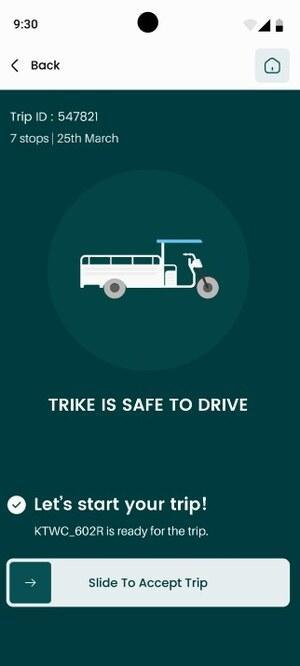
2.4 Container Scanning
If canisters or crates are assigned to the trip, the driver scans each one by QR code. The screen shows the assigned count per type and how many have been scanned. The driver must meet the minimum but can scan additional containers beyond the assignment if needed.
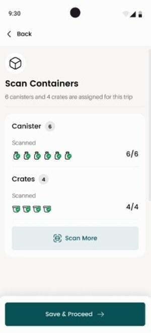
2.5 Pre-Departure Collection from Parking Lot
Before heading out, the driver is asked whether any produce needs to be collected from the parking lot for delivery to farmers en route (such as animal feed). If yes, the driver selects the produce type, enters the weight, and can use Read From Scale to pull the weight directly from a Bluetooth-connected smart scale. This step is not mandatory.
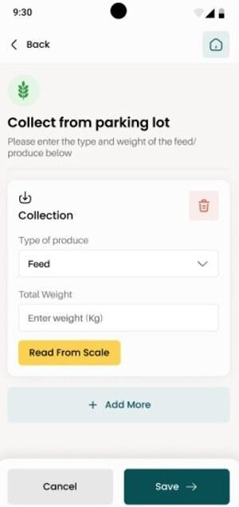
2.6 Stop Navigation
For each stop, the driver sees the stop name, full address, a Navigate button (opens the maps app with the stop coordinates pre-loaded), and an I Have Arrived button. Tapping I Have Arrived triggers a 200-metre geofence check. If outside, the driver is warned but can still proceed. Previous stops are listed below for reference.
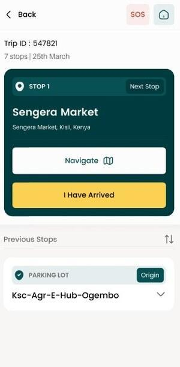
2.7 Farmer Interaction Options
After arriving at a stop, the driver selects how to interact for each farmer at that stop:
- Scan & Add — Scans the farmer's QR code to identify them and record activity.
- New Entry — Registers a new farmer on the spot. Logged as Approval Pending on the web until the hub manager verifies.
- No Show — Used when no farmers turn up at the collection point for any activity.
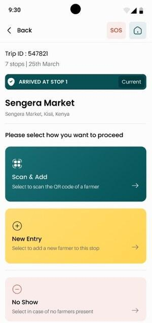
2.8 Farmer Verification
On scanning a farmer's QR code, a VERIFIED FARMER banner confirms identification. The farmer's name, phone number, and home stop are shown. The driver then selects the activity type: Collection or Delivery. A farmer from a different stop can be served at any stop within the same hub — the app flags this clearly.
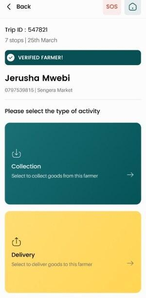
2.9 Collection Activity
On selecting Collection, the driver enters the produce type, weight (manual or via Bluetooth scale), and for milk must also tap Scan Canister to link the specific canister used — maintaining per-farmer traceability. Multiple collection entries can be added before saving. Comments are optional.
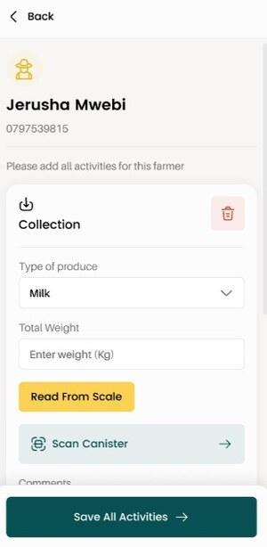
| Field | Description |
|---|---|
| Type of Produce | Dropdown of commodities configured for this stop — Milk, Banana, Feed, etc. |
| Total Weight | Manual weight entry in kg. Auto-populated if a Bluetooth scale is connected and Read From Scale is tapped. |
| Scan Canister | Scans the QR of the canister used for this farmer's milk — links canister to farmer record. Required for milk. |
| Report Spoilt Milk | Opens the spoilt milk form. Available for milk collection and milk delivery activities. |
| Save All Activities | Saves all entries for this farmer. Driver can then proceed to next farmer or next stop. |
2.10 Spoilt Milk Reporting
Spoilt milk can be reported during collection or delivery of milk. The driver enters the weight of spoilt milk and mandatory remarks describing the cause (e.g. "milk was diluted with water").
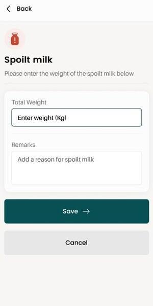
2.11 Delivery Activity
On selecting Delivery, the driver enters the produce type and weight delivered (in litres for milk). An optional comments field is available. A Report Spoilt Milk link appears for milk deliveries. After saving the delivery activity, the driver must upload a physical receipt.
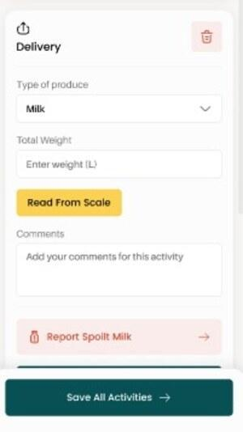
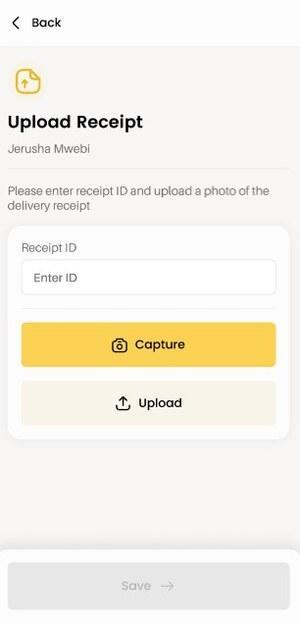
2.12 Missed Farmers
When the driver taps Proceed to Next Stop, the app checks whether any farmers scheduled at that stop were not processed. If any were missed, a modal lists them by name with phone icons so the driver can call if needed. The driver can go back and serve them or confirm and proceed.
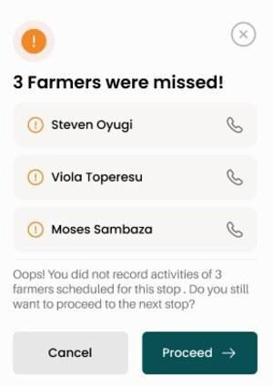
2.13 Return to Parking Lot
On arriving back at the hub, the app shows four items. Three must be completed before the End Trip button becomes active:
- Add Delivery — For any produce to be delivered at the hub itself.
- Record Battery Energy — Logs the post-trip energy per battery. Once TCU is integrated, this auto-populates from the IoT platform.
- Upload Missing Receipts — Uploads any receipts not captured at the delivery stops.
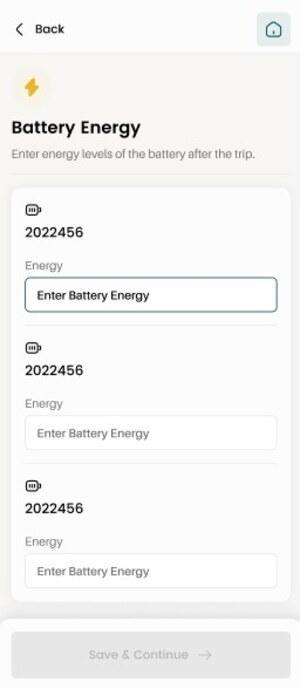
2.14 Trip Summary
After the trip ends, the driver sees a full summary with an overall card and tabbed detail views.
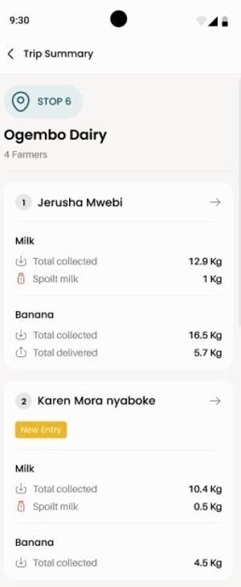
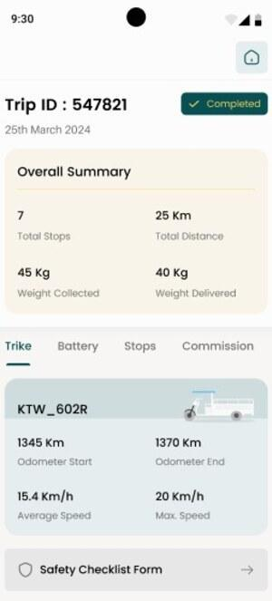
| Tab | Content |
|---|---|
| Overall Summary | Total stops, distance (km), total weight collected, total weight delivered |
| Trike | Registration number, odometer start/end, average speed, max speed, Safety Checklist Form link |
| Battery | Per-battery: Start Energy, End Energy, Energy Consumed |
| Stops | Per-stop breakdown of every farmer — commodity, weight, spoilt milk, delivery weight, New Entry badges |
| Commission | Commission earned for the trip based on weekly settlement rules |
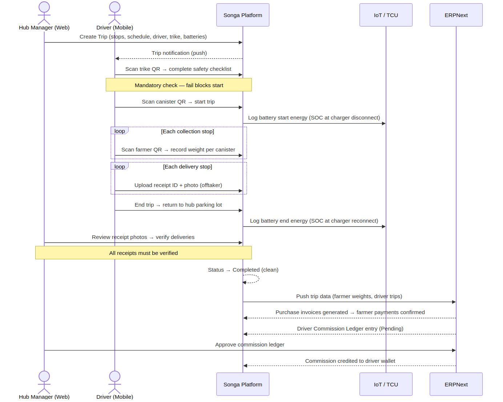
SOS Flow
The SOS button appears in the top bar of every active trip screen. It allows the driver to raise an emergency request mid-trip without ending the trip.
Three types of assistance are available from the SOS menu:
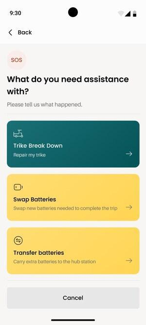
3.1 Trike Breakdown
If the trike fails, the driver taps Trike Break Down and selects one or more reasons from a checklist. The hub manager is notified immediately on the web app. The follow-up flow — dispatching a technician or replacement trike — is handled offline.
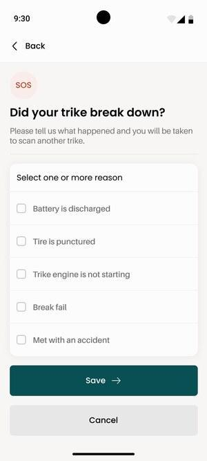
| Reason | Description |
|---|---|
| Battery Discharged | Trike batteries are fully depleted and unable to power the vehicle |
| Tyre is Punctured | Flat tyre preventing the trike from moving |
| Engine Not Starting | Trike stalls or fails to start |
| Brake Fail | Braking system malfunction |
| Met with an Accident | Collision or incident involving the trike |
3.2 Swap Batteries
If batteries are depleted mid-trip, the driver taps Swap Batteries. A hub agent at the swap point is informed through the web app. The driver visits, hands over depleted batteries, and receives charged replacements. The driver then scans each new battery on the app to check it in before resuming. This changes the current ownership of the batteries.
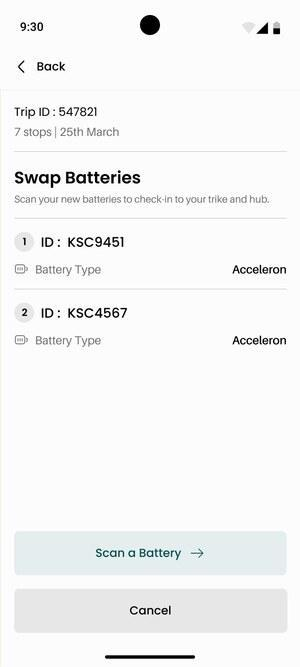
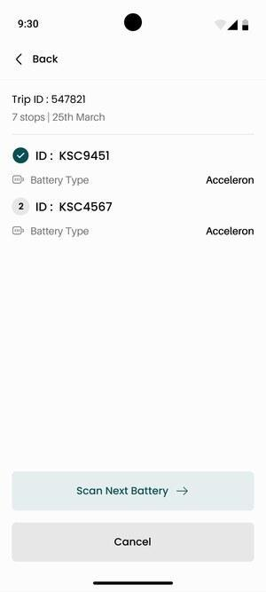
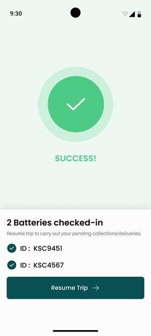
3.3 Transfer Batteries
Transfer Batteries requests additional charged batteries to be brought out to the driver's location without handing back depleted ones. The hub manager dispatches a battery agent. The driver scans each received battery to check it in. The hub-side transfer flow is documented in Chapter 9.
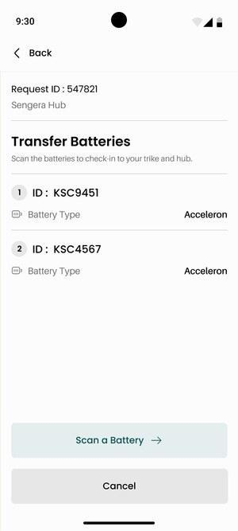
Kilikawi Session Flow
Agri-tech service operations at farm locations. Each session is a single-farmer, single-asset event. Unlike aggregation trips, sessions require connectivity to end.
Session types: Tilling · Milling · Threshing · Grinding · Chaff Cutting · Water Pumping · Ploughing
4.1 Kilikawi Homepage
The Kilikawi homepage shows today's sessions split into Upcoming Sessions and Completed Sessions. The Up Next card shows the next scheduled session — type, session ID, farmer name, and time. Start Session is active only on the day of the session.
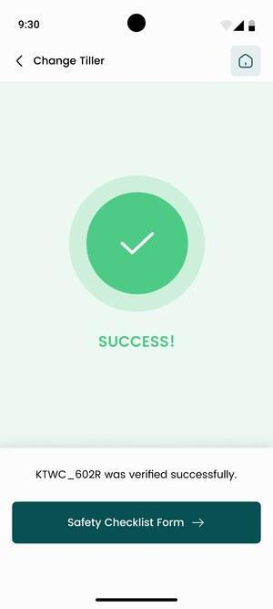
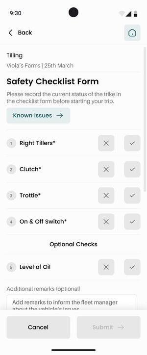
4.2 Asset Verification
On tapping Start Session, the driver searches for and selects the agri-tech asset. The list is filtered by session type — for a tilling session, only tillers appear. On selection, a success screen confirms the asset ID and shows a Safety Checklist Form button to proceed.
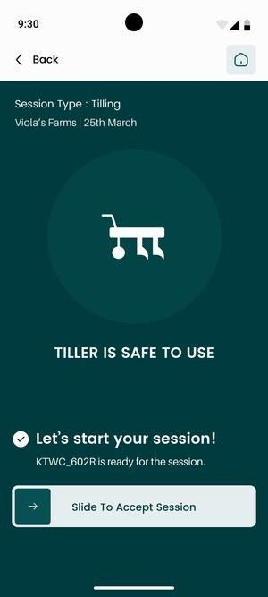
4.3 Asset Safety Checklist
Each asset type has its own safety checklist configured independently from the trike checklist. For a tiller, mandatory items include Right Tillers, Clutch, Throttle, and On & Off Switch. Optional checks include Level of Oil. An additional remarks field is available. The same pass/fail rules apply — failing a mandatory item blocks the session.
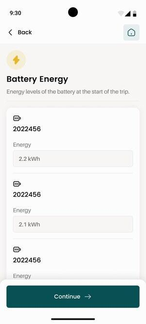
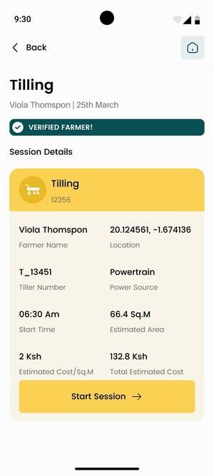
4.4 Battery Start Energy Logging
After the checklist passes, the driver logs the start energy for each battery assigned to the session. Values are pre-populated from smart charger data where available. Once TCU integration is complete, this step will be fully automated.
4.5 Farmer QR Scan and Session Details
The driver scans the farmer's QR code using the Scan QR Code prompt. A VERIFIED FARMER banner confirms the match. The full session details card is then shown — farmer name, GPS coordinates, asset number, power source, start time, estimated area, cost per unit, and total estimated cost — before the driver taps Start Session.
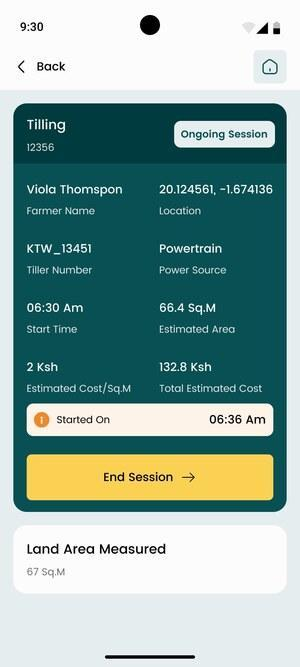
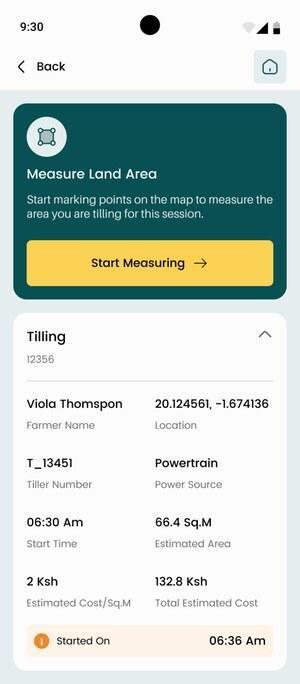
4.6 Land Area Measurement (Tilling and Ploughing Only)
For tilling and ploughing sessions, the driver must measure the actual field area. The Measure Land Area card prompts the driver to start marking boundary points on a live GPS map. The driver physically walks the perimeter, tapping Mark Point at each corner. The app calculates the polygon area automatically. All other session types run directly between start and end with no mapping step.
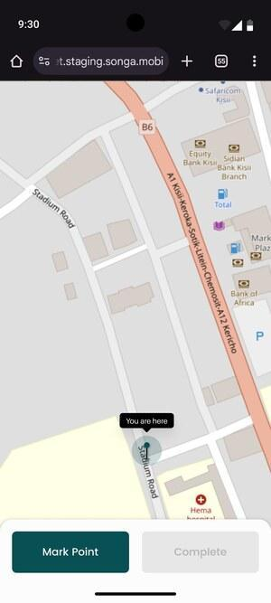
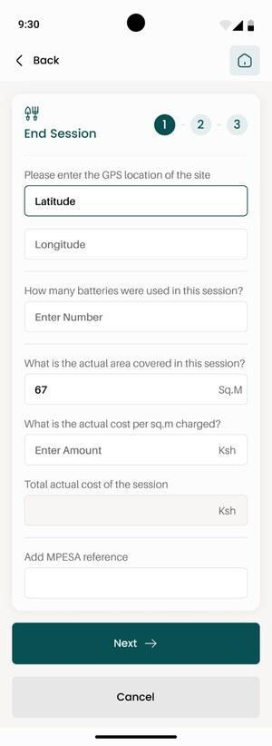
4.7 Ending a Session
On tapping End Session, a three-step wizard captures the actual session outcomes.
| Field | Description |
|---|---|
| GPS Location | Latitude and longitude of the session site — entered manually or captured from device |
| Energy Used | Amount of energy consumed during the session |
| Actual Area / Weight / Volume | Real outcome — Sq.M for tilling/ploughing, Kg for milling/threshing/grinding, Litres for water pumping |
| Actual Cost per Unit | Rate actually charged — may differ from the estimate |
| Total Actual Cost | Auto-calculated: actual quantity × actual cost per unit |
| M-Pesa Reference | Payment transaction code from the farmer. Primary payment evidence — mandatory |
4.8 Session Summary and History
After completing the end session wizard, the driver sees a full Session Summary — session type, duration, actual vs. estimated area, total cost, M-Pesa reference, farmer feedback, and agent concerns. The session also appears in the completed sessions history list, which is searchable by session type.
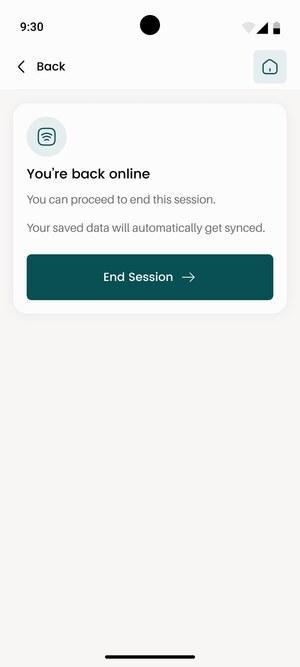
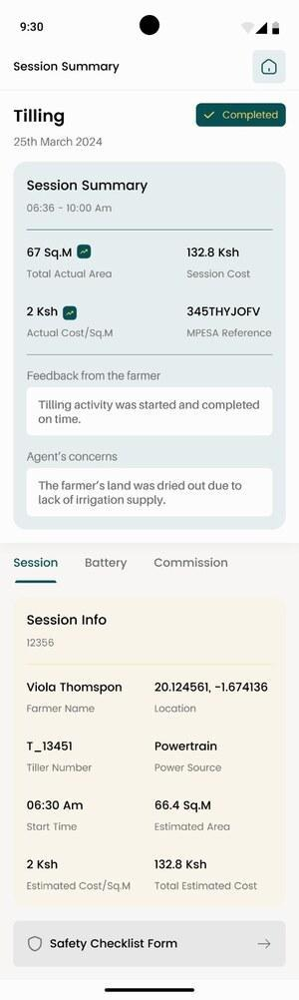
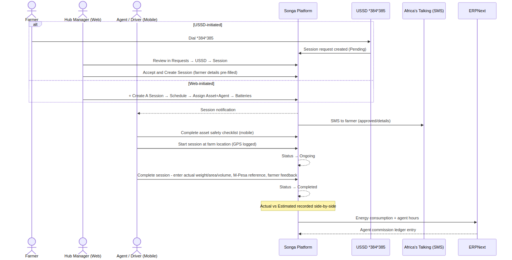
Driver Wallet
The driver's financial dashboard. Tracks three balance types and connects to the ERP system for all credit and deduction operations.
Three balance types are shown as prominent pills:
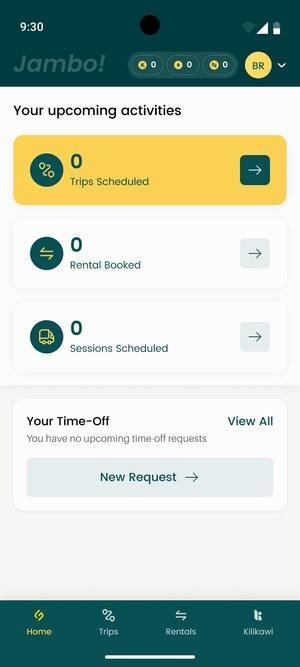
5.1 How Commission Is Used
Commission can be applied in four ways. Two are managed entirely on the ERP system, with the updated balance reflecting back on Songa:
- Trike Lease Payments — Deducted on ERP; updated balance reflects on Songa.
- Encashment — Cash withdrawal managed on ERP; balance updated on Songa.
Two are triggered from the mobile app and require ERP approval before the wallet updates:
- Purchase Rentals — Driver needs at least 1 rental in wallet before booking a rental trip.
- Purchase Energy — Driver needs sufficient kWh balance before a rental trip can start.
5.2 Purchasing Rental Trips
From the wallet, tapping Purchase Rentals opens the request form. The driver selects the quantity (1, 5, 7, or 10, or manual entry), confirms a mobile number for the M-Pesa push, sees the calculated cost, and selects Commission or M-Pesa as payment. A Pending Approval card is shown until the ERP processes it.
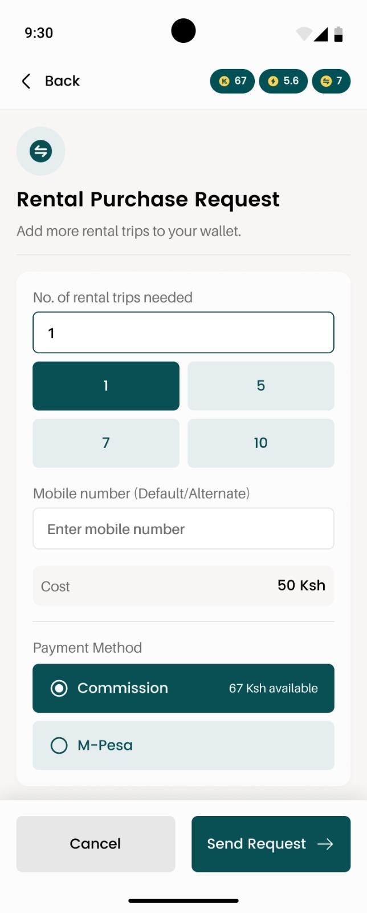
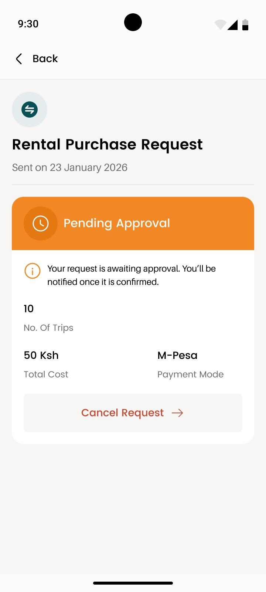
5.3 Purchasing Energy
The energy purchase flow mirrors the rental purchase flow. The driver selects kWh needed (5, 10, 15, or 20, or manual entry), mobile number, cost, and payment method. A Pending Approval card is shown until the ERP credits the wallet.
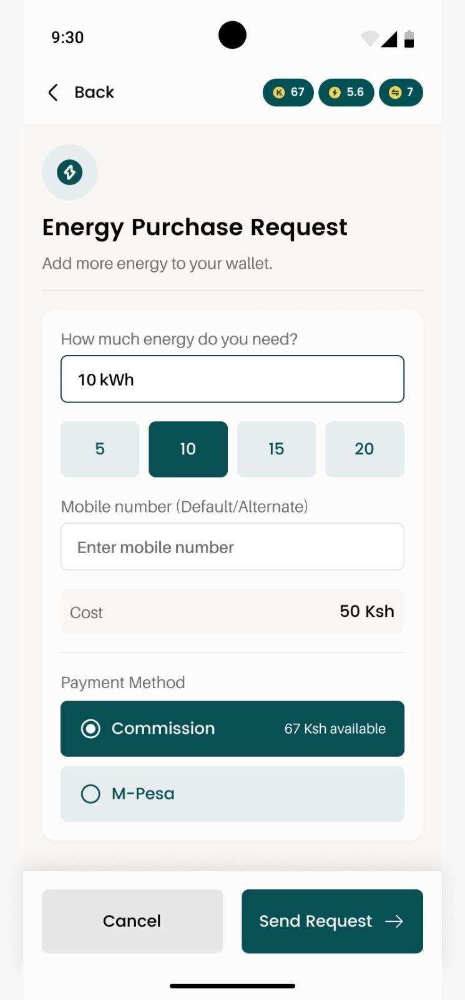
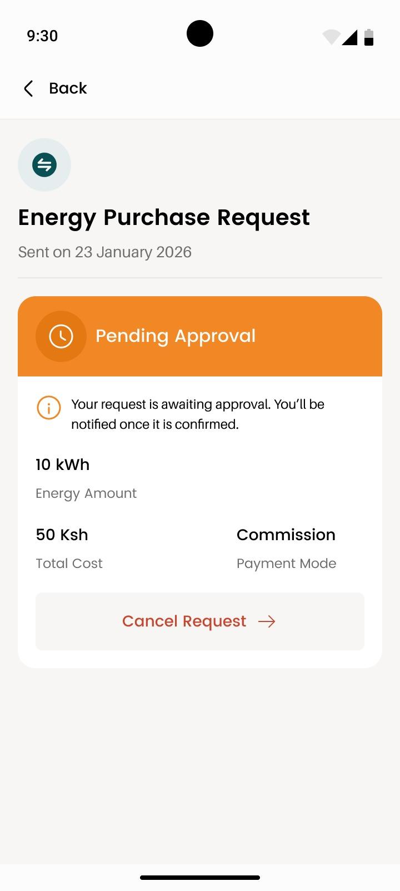
5.4 ERP Integration — Wallet Transactions
The ERP system is the financial ledger. The following doctypes handle wallet transactions:
| ERP Doctype | Description |
|---|---|
| Driver Commission Ledger | Created weekly per driver. Transaction Type: Allocation or Deduction. Format: COM-LEG-YYYY-XXXXX. Must be Approved on ERP before commission credits on Songa. |
| Energy KWh | Created on energy purchase. Fields: Energy Qty (kWh), Transaction Type (Recharge), Amount (KES), linked Commission Ledger or M-Pesa reference. |
| Rental Days | Created on rental purchase. Fields: No. of Days, Transaction Type (Recharge), Amount (KES), linked M-Pesa reference if M-Pesa payment. |
| M-Pesa Express Request | Created when M-Pesa is selected. Fields: Phone Number, Payment Gateway (STK Push), Amount (KES), Reference Doctype and Name, Status. |
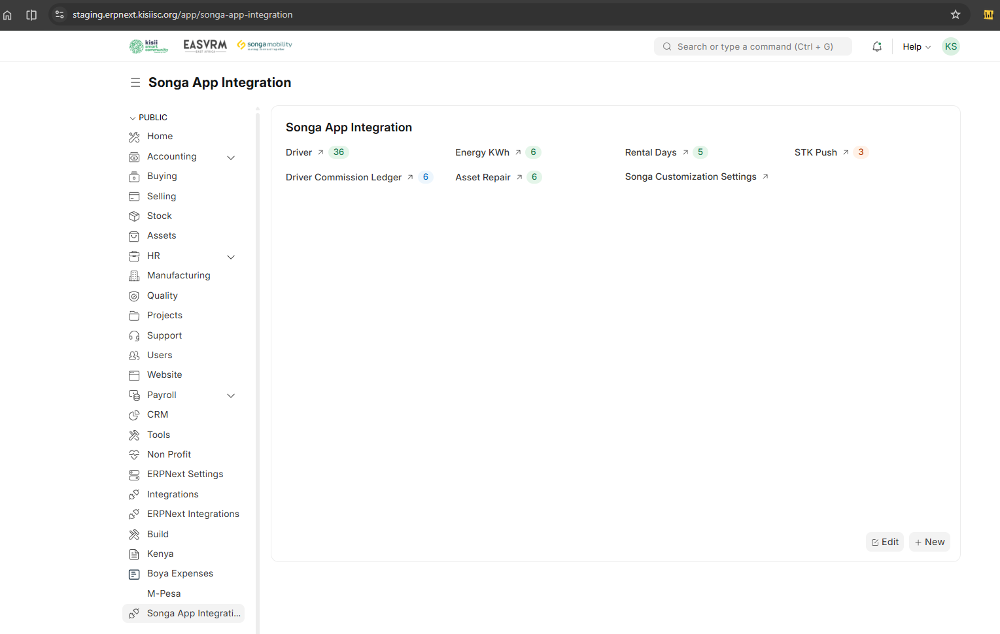
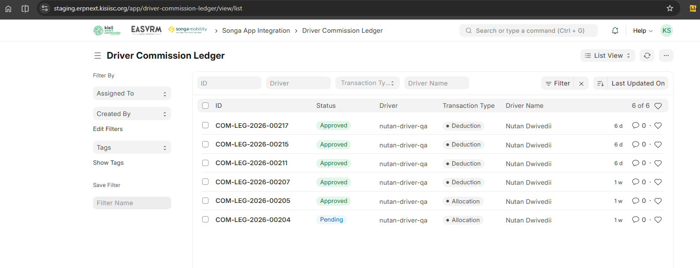
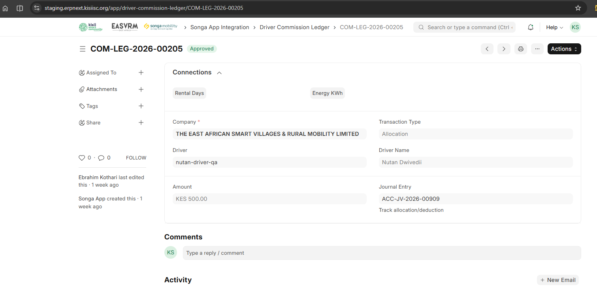
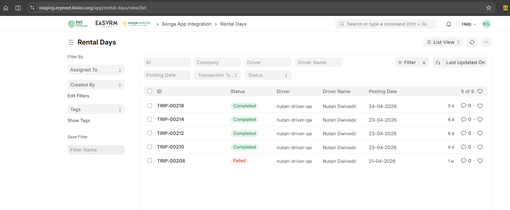
Rental Flow
Allows registered Songa drivers to rent a trike for independent use. Two wallet conditions must be met before a rental can proceed.
6.1 Rentals Homepage
The Rentals tab has two options: Book Your Trike to create a new booking request, and View Completed Rentals for history. If a request is pending or a trip is active, the homepage updates to show that state instead of the booking card.
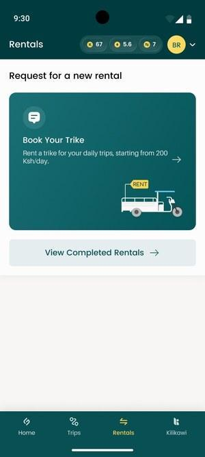
6.2 Booking a Rental
Tapping Book Your Trike opens the form. The driver sets the pickup hub, pickup date and time, and expected run (20, 40, 60, or 80 km). Pricing details show the standard daily rate and energy component. On Send, the request goes to the hub manager.
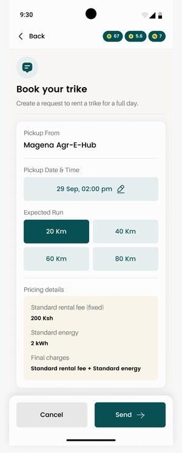
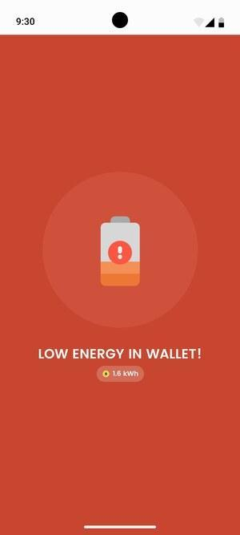
6.3 Request States
| Status | Description |
|---|---|
| Pending Approval | Request submitted, awaiting hub manager review. Details shown, Cancel Request available. |
| Trip Confirmed | Hub manager accepted and assigned a trike. Start Trip button active. |
| Rejected | Request declined. A new request can be submitted. |
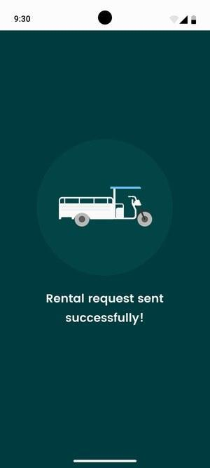
6.4 Starting a Rental Trip
On tapping Start Trip, the driver goes through the same pre-trip verification steps as an aggregation trip:
- Trike Verification — Scan QR or manually select the assigned trike (same search UI as aggregation trips).
- Safety Checklist — Same trike checklist — all mandatory item rules apply.
- Battery Start Energy — Log start energy per battery. Pre-populated from dispatch records where available.
6.5 Ongoing Rental Trip
The ongoing rental screen shows trip details and two actions: End Trip and Get Help. Get Help links to the same SOS flow — Trike Breakdown or Swap Batteries. Energy is not deducted at booking or trip start; the actual charge is applied after the trip ends based on real battery consumption.
6.6 Digital Signature — Trip End
Before the trip can be ended, a designated hub receiver must physically inspect the trike and sign off on the mobile app. The Digital Signature screen captures the receiver's name (a dropdown of registered hub personnel — not a free text field), a condition note, and a touch-based signature. The named receiver automatically receives a web notification and email on submission.
6.7 Rental Trip Summary
The completed rental summary shows overall trip metrics and three tabs with full detail.
| Tab | Content |
|---|---|
| Trike | Registration number, odometer start/end, total distance, kWh consumed vs. standard, Safety Checklist link, Digital Signature, trike changes during trip |
| Battery | Per-battery: Start Energy, End Energy, Energy Consumed (kWh) |
Profile & Time-Off
The profile panel is accessed from the avatar icon in the top right of the homepage. It contains wallet access, time-off management, password reset, and logout.
7.1 Time-Off Overview
My Time-Offs shows days available this month as a fraction (e.g. 1/4), a New Request button, and all submitted requests with their status: Approved · Pending · Rejected.
7.2 Approval Flow
On submission, the request appears in the hub manager's Driver Calendar on the web app as a Pending Request. The hub manager must reassign any conflicting trips before approving. The driver is notified on approval or rejection.
Hub Management & Charging
The Battery Agent / Hub Manager app — a dedicated mobile interface for managing batteries at hub stations. This chapter covers the Hubs tab and the battery charging flow.
The Battery Agent app uses three-tab navigation: Hubs (battery management and charging) · Transfer Requests (battery movement) · Kilikawi (session visibility).
8.1 Hubs Tab — Home Screen
The home screen opens with "Jambo!" and an Asset Overview showing total Batteries and Trikes across all hub stations. A My Hubs section lists assigned hubs. An All Hubs section shows all hubs. Each hub card shows today's Batteries, Trikes, and Trips Scheduled counts with a View All Batteries link.
8.2 Battery Listing
Tapping View All Batteries opens the hub's battery list. Total batteries available is shown in the header. Each row shows Registration Number, charge percentage (colour-coded icon), and status: Charging or Available. The list is searchable by Battery ID with a QR scan option.
8.3 Battery Detail and Charging
Tapping a battery opens its detail page showing the current charge prominently, Battery Type, Charger Type, and — for IoT-connected batteries — the Charger ID and Charger Connection status (Active or Inactive). The agent taps Start Charging to begin and End Charging to close the session.
Smart vs. Non-Smart Batteries
Battery Transfer Flow
Battery transfers are initiated on the web by a hub manager. The battery agent executes the physical transfer from the Transfer Requests tab on the mobile app.
Two transfer types exist:
9.1 Transfer Requests Overview
The Transfer Requests tab shows today's Pending Transfers (yellow KPI) and Completed Transfers (teal KPI). Each pending card shows: Request ID, transfer direction, Type badge (Check-Out / Check-In / Swap), battery count, and an action button. Completed transfers split into For Hubs and For Trips.
9.2 Check-Out Flow — Sending Batteries
Tapping Check-Out Batteries opens the Check-Out screen. Expected batteries are listed by ID, Battery Type, and Charger Type — initially numbered (not yet scanned). The agent scans each battery by QR or enters the ID manually. Once all are confirmed, Initiate Transfer marks them as In Transit.
9.3 Check-In Flow — Receiving Batteries
At the receiving hub, the agent taps Check-In Batteries. The expected batteries are listed. The agent scans each one — each gets a green tick when confirmed. Once all are scanned, Complete Transfer closes the record and moves the batteries to Available at the receiving hub.
9.4 Swap Flow
A swap has two sides. The Check-Out side sends charged batteries to the driver or other hub. The Check-In side receives depleted batteries in return. Both must be completed before the swap record closes. The pending card shows "Exchange with Trip [ID]" for mid-trip ambulance swaps, or the hub name for hub-to-hub swaps.
| Status / Type | Description |
|---|---|
| Check-Out | Batteries dispatched from the source hub. Only a Check-Out step is needed at the source for one-way transfers. |
| Transfer Initiated | Batteries dispatched and In Transit. Awaiting Check-In at the receiving hub. |
| Check-In | Batteries arriving at the receiving hub. Agent scans each to confirm receipt and close the record. |
| Swap | Two-way exchange. Check-Out of charged batteries and Check-In of depleted ones — both must complete. |
IoT Platform Reference
The IoT platform is the data broker between all connected hardware — chargers, hub inverters, and trike TCUs — and the Songa backend. Hub managers and technical staff interact with it directly for real-time diagnostics and configuration.
10.1 Hub Station Dashboard
The hub-level dashboard shows Hub Serial Number, Hub Mains State (1 = connected), and Hub Battery SOC at the top, followed by Provision Good/Warning status circles. A grid of up to 30 Node State indicators shows every charger slot: green = active and healthy, dark grey = inactive, dark red = error. Specific error labels: Provision Error and Address Error.
10.2 Inverter Detail View
Drilling into the hub inverter shows: Inverter Serial Number, Battery Voltage, SOC, Battery Current, Battery Capacity, Temperature, SOH, Fault Status, Inverter Frequency, and Load Frequency. Three time-series charts cover the last 5 hours: Inverter Voltage, Current, and Power across three phases (A, B, C). This telemetry underlies the Hub Energy Management module on the Songa web app.
10.3 Node Detail View (Charger)
Each charger node view shows all real-time charging telemetry. The critical linking field is the BMS Serial Number — the unique ID of the battery physically connected. The platform uses this to link live battery data to the correct Songa battery record. Charger State, C MosFETs, and D MosFETs are togglable from this view.
| Node Metric | Description |
|---|---|
| BMS Serial Number | Unique battery identifier as reported by its BMS. Links this charger node to the correct Songa battery record. |
| Setpoint Charging Voltage / Current | Target voltage (mV) and current (mA) the charger is configured to deliver |
| Charging Voltage / Current | Actual voltage and current being delivered at this moment |
| Battery Voltage / Current | Live readings from the connected battery's BMS |
| C MosFETs / D MosFETs | Charge and discharge MOSFET states — 1 = open. Controllable from this dashboard. |
| Cell Difference | Voltage spread between highest and lowest cells (mV). A growing value indicates cell imbalance. |
| Battery Cycles | Total charge/discharge cycles — primary long-term battery health indicator |
| Battery SOC | State of Charge — current charge level as a percentage |
| Battery SOH | State of Health — remaining capacity relative to original specification |
| Charger State | ON/OFF toggle — controls active charging. Operable from this dashboard. |
Glossary
Key terms used across both mobile app variants and this documentation.
| Term | Definition |
|---|---|
| Aggregation | Dairy collection operation — driver collects from farmers across stops and delivers to off-takers. |
| Battery Ambulance | Emergency mid-trip battery swap or transfer triggered via the SOS button. |
| BMS | Battery Management System — electronics within each battery reporting SOC, voltage, current, and temperature. |
| BMS Serial Number | Unique battery ID reported by the BMS. Used to link a charger Node to the correct Songa battery record. |
| Canister / Crate | Physical containers registered as Songa assets with QR codes. Scanned at trip start and linked per farmer during milk collection. |
| End Energy | Battery energy (kWh) at reconnection to charger after an operation. Used to calculate energy consumed. |
| Geofence | 200-metre GPS boundary used to validate driver arrival at each stop. Warning issued if outside, but driver can proceed. |
| IoT Platform | Thingsboard instance acting as data broker between hardware (TCUs, HCUs, chargers) and the Songa backend. |
| Kilikawi | Brand name for Songa's agri-tech services. Also the session operation type and the app mode for agents. |
| Login As | Dropdown on the mobile login screen that sets the default homepage — Aggregation, Kilikawi, or Rental. Does not restrict access to other functions. |
| M-Pesa Reference | Payment transaction code from a farmer paying for a Kilikawi session. Mandatory at session end. |
| Node | IoT platform term for a smart charger unit at a hub station. |
| Off-Taker | A buyer of agricultural produce — typically a dairy or processing facility. Receives delivery from drivers. |
| QR Code | Assigned to all major entities: trikes, batteries, farmers, canisters, assets. Used for identification in all mobile flows. |
| Receipt ID | Reference number on the physical receipt from an off-taker. Required for the receipt upload step at delivery. |
| Session | A single-farmer, single-asset agri-tech service operation (Kilikawi). |
| Slide to Accept | Swipe-based confirmation at critical decision points — accepting a trip or session after passing the safety checklist. |
| SOC | State of Charge — current battery charge level as a percentage. |
| SOH | State of Health — remaining battery capacity relative to original specification. Degrades over charge cycles. |
| Spoilt Milk | Milk found undeliverable during a trip. Reported by the driver with weight and cause. Deducted from driver commission at weekly settlement. |
| Start Energy | Battery energy (kWh) at disconnection from charger before an operation. Used as baseline for consumption calculation. |
| TCU | Trike Control Unit — onboard smart computer transmitting real-time GPS and BMS data to the IoT platform. |
| USSD | Unstructured Supplementary Service Data — allows platform interaction via *384*385# without a smartphone. |